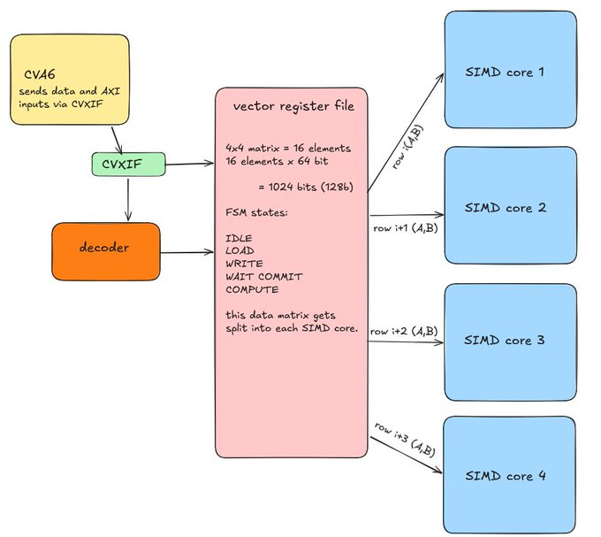
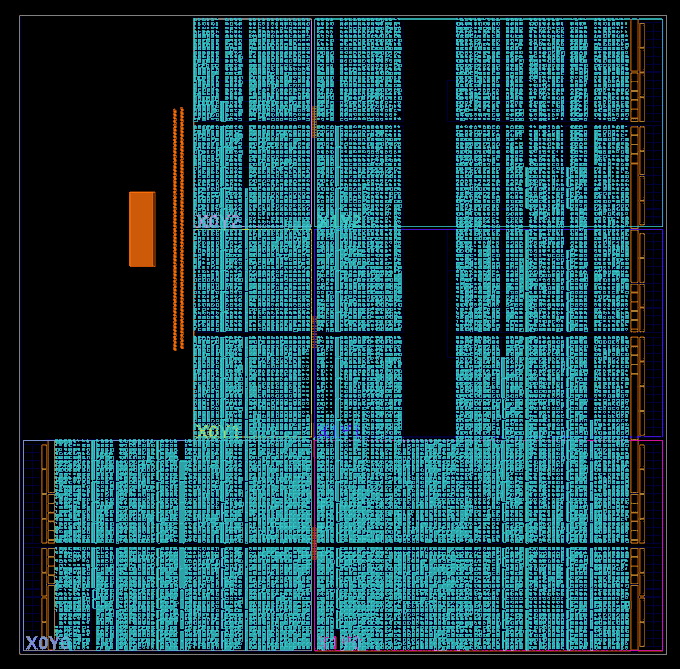

TinyGPU is a custom Risc-V Vector Extension supporting matrix multiplication accelerator. It acts as a hardware accelerator to CVA6 CPU. We have used SIMD style architecture to design and implement the GPU on a Zynq-zc702 FPGA and have observed a speed up of 15x for 4x4 matmul.
As demand for LLMs and graphics goes up this was a good project to learn why accelerators are needed and how to design them from a hardware point of view. Complete info: https://athralk.github.io/blog/gpu-project/index.html
Gallery

TinyGPU + CVA6 flowchart

Zynq FPGA Utilisation